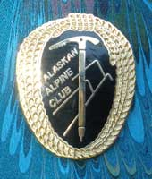
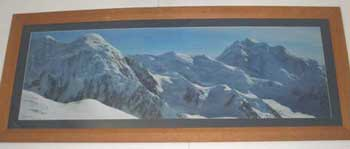

Alaskan Alpine Club
Alaska mountain climbing club
Alaskan Alpine Club
1957 Weston Drive
Fairbanks, Alaska 99709
phone 907 479 2149
climb at AlaskanAlpineClub.org
Old Snowy, Black Cap and baby clouds,
from Silvertip.

November 2011: The club office guy was in the office,
but is again out of the office, so snail mail
stuff will be slow and late, but it will happen.
September 2011: Imagine our robust laughter....
After Rainier National Park announced its climbing tax increase
this year, Denali National Park announced that the $200 tax
to climb Denali or Mt. Foraker will be increased to $350 per
person, with the tax for those under age 25, $250. Plus, the
Park
Service thugs stated their intent to periodically increase
the tax, which eliminates their need to consider public comments
each
time they increase the tax in the future. Thank the Access
Fund donors and American Alpine Club members for
supporting a "fully funded National Park Service", which
they stated as their primary goal, above the interests of the
common
mountain climbers.
Those repugnant, anti-climber organizations have again
identified themselves as the rich and arrogant government
insiders who want the prominent mountains for the exclusive
playground of the rich and arrogant folks. That tax is a
tax on your RIGHT to walk on your own public land. The AmerAC
and Access Fund groupies are the darlings of the
Bush and Obama mentality wanting to subjugate the world under
the Washington DC's decisions and taxation to pay for
its decisions.
That tax is an exclusive tax on mountain climbers who
are paying all the other countless layers of taxes on everything,
for what was supposed to pay for the management of public lands
and services. For vastly more expensive tax funded
programs and rescues, the fishermen, hunters, bird watchers and
others pay no such tax. It is only mountain climbers,
because the rich AmerAC and Access Fund "leaders" have
long been known to be in the Park Service pocket.
Now consider the undeniable stupidity of Access Fund
donors and American Alpine Club members. They are attempting
to"fully fund" (by their own words) an insatiably
greedy government bureaucracy. That is an impossibility. If
you can
find anyone more stupid than that (except for lawyers), email
the web slave for his admiration of your unprecedented search
abilities. As the taxes inherently increase, the AmerAC members
and Access Fund donors will be more reviled by actual climbers,
and will have no excuse. They supported the periodic increases,
on record.
More on the climbing tax increase, ah, soon.
2011: Alaskan
Alpine Club proposal to eliminate US climbing taxes (peak fees)
Climbers climbing Denali and Rainier next year
are "A Disgrace to Mountain Climbing History".

The new 5 foot long photo in the HQ.
Alaska Range hills.
About it on the Museum page.
What do you mean this website is boring and does not change
much.... What are you doing on a computer
instead of freezing your warmer parts in a hasty snow cave on
a desperate ridge, the storm raging around you,
fearing the route ahead and scared spittless about having to go
back down what you just survived in the storm.
The game is all about being relaxed and having fun, so kick back
in your cave, enjoy your favorite convenient stress
relief substance. It is legal in Alaska in the privacy of your
own home, and your snow cave is your home. Elsewhere
you will just have to stay stressed-out under the jackboots of
the mental midget government cops and prosecutors
teaching their children that they can never become legal adults
to make their own personal decisions because cops
and prosecutors demand the insatiable POWER to dictate their and
your lives. Do not worry, the humans will
belatedly evolve out of their craving for POWER, and the storm
will end. The route ahead will be sunny, warm
and calm. Ah, but if the storm continues, and you get low on food,
you will have a great story to tell.
July 2011 Club headquarters museum and archives......
New photos uploaded August 2011
Among other things, two ice axes that were auctioned off at
the
famous John Waterman equipment auctions in the past, found
their way back to the Club museum, after their adventures in the
mountains. John Waterman's CPO shirt walked into the museum.
A five foot long, up close photo of some Alaska Range mountains,
in a custom lacewood frame is now above the stone mantle that
backed the previous wood heating stove. Some posters found their
way into books of plastic covers. And a few things like that.
The Alaskan Alpine Club is creating a museum and archives.
You can donate or loan old or new climbing equipment, publications,
etceteras, for display. We will put your name and the date on
the items. In a hundred years, people will know that a person
with your name was a climber back in these times. You can offer
a story with them, for the archives. Because Alaskan Alpine Club
members live around the world, this opportunity is open to anyone.
This might be a good opportunity to downsize your old stuff
storage. Individual items such as carabiners, ice axes, pitons,
etceteras, are welcome. If you decide to start climbing again,
your
old stuff will be convenient for your Alaska climbing adventure.
What you donate is LOANED to the museum, so you or your
offspring can reclaim it if you or they wish. Spread the word.
And you are always welcome at the Alaskan Alpine Club headquarters.
Then get some new climbing stuff, and go climbing.
A previous Alaskan Alpine Club comment
on the National Park Service proposal to increase the climbing
tax on Denali,
Climbing Concepts 3, top of page
Club pins. Photo on right. Available for donations of $5 or more.
Introduction to Alaska climbing (linked to below)
The difference between the Alaskan Alpine Club and all other
American mountain climber clubs....
The leaders of other climbing clubs literally cannot comprehend
the following, but climbers can:
1. You are a member of the Alaskan Alpine Club if you say you
are. Climbers derive no benefit from
somebody keeping track of club membership lists. Climbers climb,
not waste their time with organizational
processes. There are Alaskan Alpine Club members around the world,
who enjoy being members.
2. Climbing is an individual expression of freedom, challenging
one's physical and mental abilities
in a dangerous environment. The activity does not damage any other
humans or the environment.
Therefore there is no need or logical reason for tax paid government
intervention into the activity of
climbing. By nature, genuine climbers do not appreciate the useless
intrusions, demands, threats, lies
and self-serving taxation imposed by government folks. The Alaskan
Alpine Club is of genuine climbers.
3. Climbers are more than willing to meet their responsibilities.
More than any other outdoor activity group,
mountain climbers provided their own volunteer mountain rescue
groups and rescue financing programs,
that were fully adequate. Then the insatiably greedy, power-craving
government folks devised and imposed all
manner of tactics, lies and raw force to usurp those responsibilities,
thwart climber processes to meet them,
lie to the public about climbers, and then based climbing regulations
on the claim that climbers are irresponsible.
4. More climbers clean up other climbers' trash, than leave
it, except where Park Service rangers threaten climbers
with fines, and thus incite defiance, by the human mind's designed
reaction against threats and the use of force.
5. Environmentalists are the only citizen organizations which
support the Park Service and other government agency
regulations that hassle, threaten and tax climbers for no benefit
to society. Sierra Club leaders have openly bragged
about the environmentalists taking over all the American mountaineering
organizations, except the Alaskan Alpine Club.
The Alaskan Alpine Club is a climber's organization, unlike all
the American environmentalist mountaineering clubs
who support anti-climber regulations, in the name of environmentalism,
and in trappings of climbers.
6. The Alaskan Alpine Club supports self-responsibility, mutual
assistance, and the rights of climbers. We rag
the pitiably dishonest government folks, and their unquestioning
supporters. We have fun, and laugh a lot.
And 7. The environmentalists, identical to the DemocanRepublicrat
War and Police Regime (with its
unquestioning National Park police), and all power-based institutions,
functionally decree that YOU MUST
DO AS THEY SAY, for your own good, under threat of armed police
and jail, because you are too ignorant
to make your own decisions. They suggest that your brain design
is inferior to environmentalists, and inferior
to unquestioning (therefore unthinking), orders-obeying sorts
who sink to police and lawyer jobs. Notice that their
institutional opponents, unlike individual thinkers such
as independent-minded climbers, suggest the same concepts of
their superiority, and your inferior brain design. It is
impossible for them to be superior to each other, and to you,
by
design of the human mind, as they each suggest they are, revealing
their laughable ignorance of reasoning. And they
are too intellectually absent to figure it out even if they read
these words. They perceive that you must pay the Park
Rangers (permit fees) who are there to arrest you if you do not
pay them, because they have the support of the
power-based (unquestioning) environmentalists, for the same reason
you must pay the US Army (taxes) to slaughter
whomever the President decrees, without a Congressional Declaration
of War, because they have the support of the
power-based (unquestioning) DemocanRepublicrats. They perceive
that you must ask no questions. And they refuse
to answer effective questions. The existence of power requires
an ignorant society of institutions too self-serving to
question the corruption of their own power.
IN CONTRAST individual thinking mountain climbers who learn
the flawless reality of the mountains, suggest
that they can more logically make their own decisions, with a
brain design inherently the same as all humans, without
their perceptions being inherently corrupted by the POWER of police
and environmentalist organizations who as
individuals make the same number of mistakes as everybody else,
by design of the human mind. Then because of the
corruption of their institutional power, their power-damaged minds
make more damaging mistakes, inherent to their
perception of holding POWER over you. Genuine mountain climbers
recognize that YOU TOO can make your own
decisions more logically than another person who inherently does
not hold your mind's knowledge, and certainly more
logically than a self-serving, power-corrupted government sort
who uses his power to get more power/money. The
Alaskan Alpine Club is of genuine climbers. You are a member if
you say you are, because you hold, learn and logically
use the controlling knowledge for your life. Your choice. You
will always reveal your thinking ability.
No human could create such a brilliant design, a human mind
with no recognizable limit to its reasoning ability,
the ability to resolve every identifiable contradiction in the
universe, counter-balanced by a mechanism that facilitates the
stimuli-induced damage of the perception of "power".
Power-damaged minds avidly surrender their priceless reasoning
ability for the most petty ego gratification of power, an obviously
self-doomed trait. The concept is useless to the mountain
climber using her or his mind to resolve each next perceived contradiction
upon which he or she made his or her life
dependent, for the fun that offers the knowledge.
Alaskan Alpine Club members enjoy the comedy of the government
chaps and environmentalists who obviously make
mistakes attempting to dictate your life with the force of mob
rule (government), their "laws" and police guns. Humor
them.
They are intellectually uncurable. They will believe their superiority
above humans the rest of their pitiable lives.
The Alaskan Alpine Club's organizational form, complementing
the freedom of cyberspace,
will be common in the future, led by dynamic mountain climbers
of course. The club needs
no power of recorded membership numbers, and only offers reasoning
for the consideration
of fellow climbers who may ascribe to that reasoning if it represents
their own.
The standard introduction.......
Yooooo, for good grief sakes...
There we were, mind you, and it was desperate indeed, albeit as usual. It was in the dark of night, in the dead of winter, in the heart of the Alaska Range, lost somewhere on the glacier amid gaping crevasses, the mountains towered above, and the storm raged. Exposed flesh freezes in seconds, you know.
And if you are reading this, you aint no mountain climber. The only real mountain climber is climbing right now, by definition. Anyone else may have been a climber, and may want to be a climber, but is not a climber right now because he is not climbing right now. Well, do you accurately use words, and thus mean what you say? Meaning what you say is a valuable skill in the mountains, and all other places.
Now that we do not have to deal with the inflated ego of those sorts who think they are mountain climbers, we can chit-chat about the Alaskan Alpine Club, Alaska mountain climbing, and laugh ourselves to tears over the antics of these humans.
You can learn that lesson from the mountains. The mountains always deal with what is, rather than what people say. Do the same and you will do well, if you know what questions to ask to distinguish between what is said and what is.
Interested in climbing in Alaska?
Buy or download a topographical map of where you want to climb, go there, climb, and have entirely too much fun.
Need any of the standard mountaineering information that people think they need?
Check out all the standard web sites, books, clubs, stores and such places for standard climbing stuff.
Want some non-standard stuff about mountain climbing?
Imagine that. You have stumbled onto the right site. That is what this club and Alaska are about.
But there are only words and visual illusions at this web site, so the wiser person will hit the off-switch, grab the topo map, and head out the door.
The hardest part of every climb, is getting out of town.
Nothing on this web site or any other web site can assist you in actual climbing, the act of putting one foot in front of and above the other, and hanging on, until you get to the summit. But this web site might give your mind what no climbing organization leaders and government drones want you to have, some knowledge also offered by the mountains, that is, how to be free.
Herein is just knowledge, if you sufficiently question what you read, with real questions, and answer your questions.
The extent of the fun you will have in the mountains, where you may otherwise be miserable, working hard and in danger, is predicated on the extent of the questions you prior ask of your actions, and your answers. Otherwise stated: The knowledge your mind seeks and finds.
And from a mountain climbing club, did you want the rhetorical garbage that ego-craving, control-mentality club officers tell you, usually telling you that you have to do what the government dolts tell you to do, and ask no serious questions, or did you want the knowledge of concepts you learned from your own mind's questions and answers which need no organization leaders or their petty corrupting power? Notice the questions that organization and government leaders flee instead of answer. Ask those questions until you recognize the answers that prevail against all questions, to discover that organization and government leaders serve only themselves, at your cost. You do not need them.
If you are a mountain climber, you need only the mountains and your freedom.
You may do as you consider logical, as wisely done in the mountains, and you will define yourself.
Climb on...
Doug Buchanan
The club web page slave.
Climbing Taxes
The Club
Climbing Concepts 1
Climbing Concepts 2
Climbing Concepts 3
Club Museum
Gullible Climbers
Member Number
Mountain Rescue Fund
Wilderness Classic Race
National Park Service
Posters and Calendars
Posters 2
Photos
Events
Ice Towers
Ice Towers Previous Web Cam
03-04 Ice Tower
04-05 Ice Tower
05-06 Ice Tower
07-08 Ice Tower1
07-08 Ice Tower2
07-08 Ice Tower3
07-08 Ice Tower4
07-08 Ice Tower5
07-08 Ice Tower6
07-08 Ice Tower7
07-08 Ice Tower8
Other Ice Towers
Links Way cool
other websites, of course.